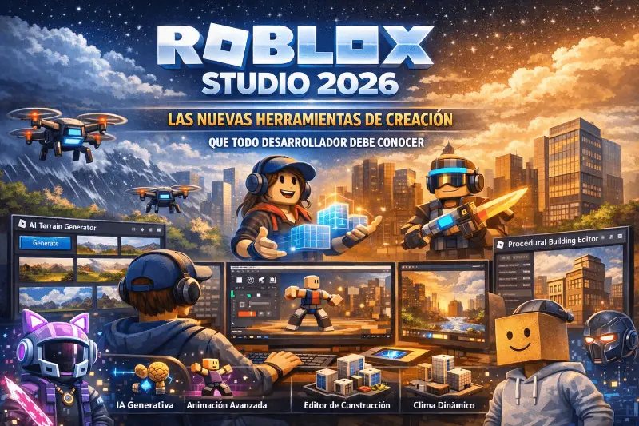

Roblox Studio 2026: guía completa para crear tu primer juego desde cero

Roblox Studio es la herramienta gratuita con la que se han creado miles de millones de horas de entretenimiento. En 2026, la incorporación de asistentes de inteligencia artificial, nuevos materiales visuales y un editor de animaciones rediseñado han convertido Studio en una plataforma de desarrollo accesible como nunca antes. Si siempre quisiste crear tu propio juego pero no sabías por dónde empezar, esta es la guía que necesitabas.
¿Por qué aprender Roblox Studio en 2026?
Roblox tiene más de 200 millones de usuarios activos mensuales y una economía de creadores que mueve cientos de millones de dólares al año. A diferencia de otros motores de juego, Studio ofrece algo único: acceso inmediato a esa audiencia desde el momento en que publicas tu experiencia. No necesitas un equipo de marketing ni un estudio de desarrollo. Necesitas una idea, tiempo y las herramientas que Studio pone a tu disposición de forma completamente gratuita.
En 2026, el argumento se vuelve todavía más convincente. Las nuevas funciones de asistencia por inteligencia artificial reducen la curva de aprendizaje de meses a días. Si tienes 14 años o 40, si sabes programar o no, Roblox Studio tiene un punto de entrada para ti.
Los pasos esenciales para empezar
Descarga e instalación
Ve a create.roblox.com y descarga Studio para Windows o macOS. La instalación tarda menos de tres minutos. Al abrirlo por primera vez verás una pantalla de plantillas: empieza siempre con Baseplate (plataforma en blanco) para aprender la interfaz sin distracciones. Las plantillas temáticas son útiles más adelante, cuando ya conozcas los controles básicos.
La interfaz en cinco minutos
Studio tiene cuatro zonas clave: el Viewport (el mundo 3D que estás construyendo), el Explorer (árbol de todos los objetos de la escena), el Properties (propiedades del objeto seleccionado) y la Toolbox (biblioteca de assets gratuitos de la comunidad). Dedica la primera sesión solo a familiarizarte con estas cuatro áreas antes de crear nada.
Tu primera parte (Part) y tu primer script
En Roblox Studio todo empieza con una Part: un bloque que puedes mover, escalar, colorear y darle propiedades físicas. Inserta una Part desde el menú Model, cámbiala de color en Properties, y luego inserta un Script dentro de ella. Escribe print("Hola mundo"), presiona Play y verás el mensaje en la consola. Ese es tu primer programa en Luau.
Luau: el lenguaje de programación de Roblox
Luau es una versión optimizada de Lua, diseñada específicamente para Roblox. Es un lenguaje de alto nivel, con sintaxis limpia y curva de aprendizaje suave comparado con C++ o Java. Si nunca has programado, Luau es uno de los mejores puntos de entrada al desarrollo de juegos que existen.
Lo más importante que necesitas entender al principio es la diferencia entre Script (corre en el servidor) y LocalScript (corre en el cliente del jugador). Esta distinción es la base de toda la arquitectura de juegos en Roblox.
La IA generativa en Studio: la gran novedad de 2026
Asistente de código integrado
El asistente de IA de Studio puede generar scripts funcionales a partir de descripciones en lenguaje natural. Escribes "crea un sistema de puertas que se abran cuando el jugador se acerque" y el asistente produce el código base. No reemplaza aprender Luau, pero acelera enormemente el proceso de construcción y ayuda a entender cómo se estructura el código.
Generación de terreno por texto
Puedes describir un paisaje en lenguaje natural y Studio genera una base de terreno 3D que luego refinas con el editor manual. "Un bosque denso con un río en el centro y ruinas al norte" produce un mapa que antes habría tardado horas en construir desde cero. Es una herramienta de prototipado rápido, no un producto final, pero cambia completamente la velocidad de trabajo.
NPCs conversacionales
Studio permite ahora conectar personajes no jugables a modelos de lenguaje que responden preguntas de los jugadores en tiempo real, dentro del juego. Los primeros juegos que usan esta tecnología muestran NPCs que recuerdan el contexto de la conversación y guían narrativas de forma dinámica. Para juegos de aventura o roleplay, este cambio es revolucionario.
Materiales PBR y gráficos mejorados
En 2026, Roblox Studio soporta materiales basados en físicas (PBR) que producen superficies con reflectividad, rugosidad y emisión de luz que hacen los mundos visualmente mucho más ricos. Combinados con el sistema de iluminación Future, que calcula sombras dinámicas y reflexiones en tiempo real, los juegos de Studio pueden alcanzar una calidad visual comparable a motores más complejos para géneros que no requieren rendering ultra realista.
El truco para aprovechar estas funciones sin sacrificar el rendimiento es aplicar materiales PBR con criterio: superficies de agua, metales y piedra se benefician enormemente. Los bloques de color sólido, por el contrario, no ganan nada con PBR y suman coste de procesamiento innecesario.
Monetización: cómo ganar Robux con tu juego
Una vez que publicas tu juego, tienes acceso a tres sistemas de ingresos principales:
- Game Passes: beneficios permanentes que el jugador compra una vez. Son la forma más sencilla de monetizar: una zona VIP, una herramienta exclusiva, una mascota especial. El precio óptimo para primeros juegos suele estar entre 75 y 250 Robux.
- Developer Products: ítems consumibles que el jugador puede comprar repetidamente. Moneda del juego, vidas extra, aceleradores de progresión. Son el motor de los ingresos recurrentes y el modelo preferido de los juegos más exitosos de la plataforma.
- Premium Payouts: Roblox te paga automáticamente en función del tiempo que los usuarios con suscripción Premium pasan en tu experiencia. No requiere configuración extra y es la fuente de ingreso más pasiva disponible.
El flujo de trabajo de un creador principiante
- Semana 1: instala Studio, completa los tutoriales interactivos de la pantalla de inicio y aprende a mover, escalar y colorear partes.
- Semana 2–3: aprende los fundamentos de Luau. Variables, funciones, eventos. El canal oficial de Roblox Education en YouTube tiene una serie gratuita de 10 episodios que cubre exactamente esto.
- Semana 4: construye un juego pequeño pero completo. No un mundo gigante: un obby de 20 plataformas con una pantalla de inicio y un sistema de puntos. Completar algo es más valioso que empezar proyectos grandes.
- Mes 2: publica ese primer juego. Recibe feedback. Itera. El 95% de los juegos de Roblox que hoy tienen millones de visitas empezaron como proyectos modestos que mejoraron con el tiempo.
- Mes 3 en adelante: aprende sistemas más complejos: DataStore para guardar el progreso del jugador, RemoteEvents para comunicación cliente-servidor, y el sistema de Marketplace para tus primeros Game Passes.
Recursos gratuitos para aprender Studio
- create.roblox.com/docs — Documentación oficial completa y actualizada.
- education.roblox.com — Cursos gratuitos estructurados para principiantes, disponibles en varios idiomas.
- devforum.roblox.com — El foro oficial de desarrolladores, donde la comunidad resuelve preguntas técnicas con rapidez.
- YouTube en español — Busca canales específicos de Roblox Studio en castellano. Prioriza contenido de 2025–2026 para que las interfaces coincidan con tu versión de Studio.
El mejor momento para empezar es ahora
Roblox Studio es gratuito, la audiencia ya existe y las herramientas de IA han eliminado gran parte de las barreras técnicas que frenaban a los principiantes. Los creadores que empiezan hoy con una idea clara y la disciplina de terminar proyectos pequeños antes de lanzarse a proyectos grandes tienen más posibilidades que nunca de construir experiencias que lleguen a millones de jugadores.
No necesitas saber programar desde el día uno. No necesitas un equipo. Necesitas curiosidad, la disposición de aprender con cada error y la paciencia de publicar algo imperfecto y mejorarlo con el tiempo. Esa es la historia de origen de prácticamente todos los grandes creadores de Roblox.